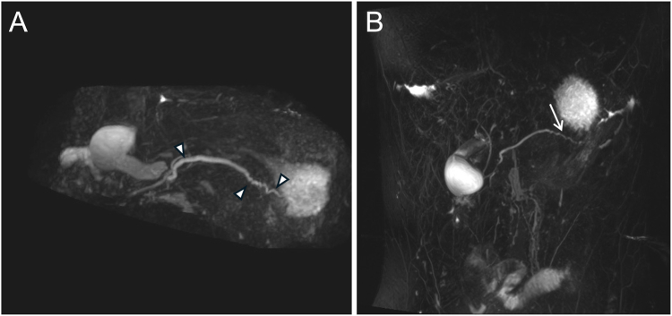
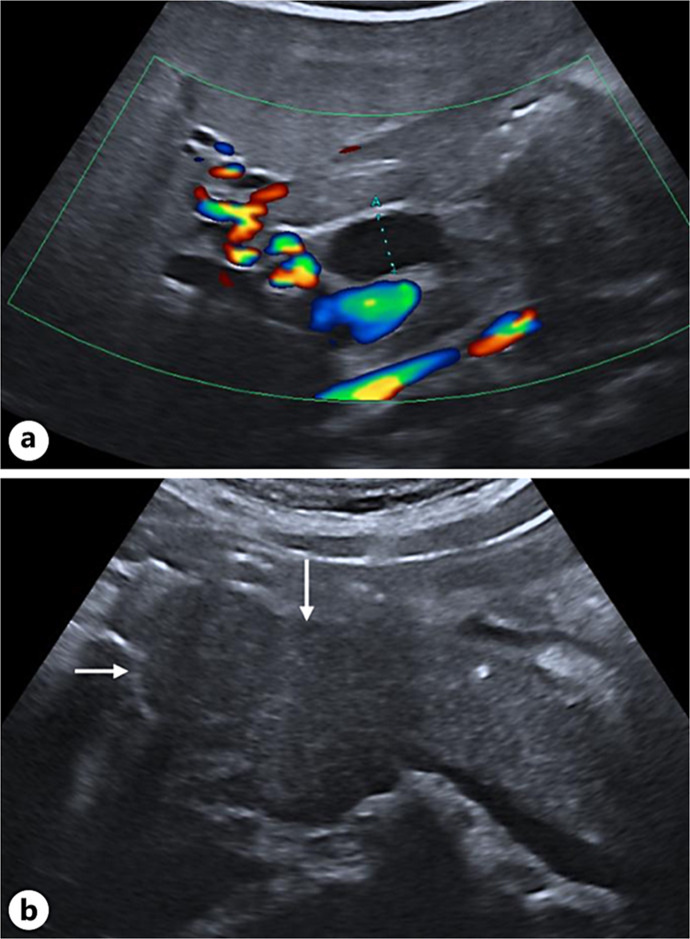
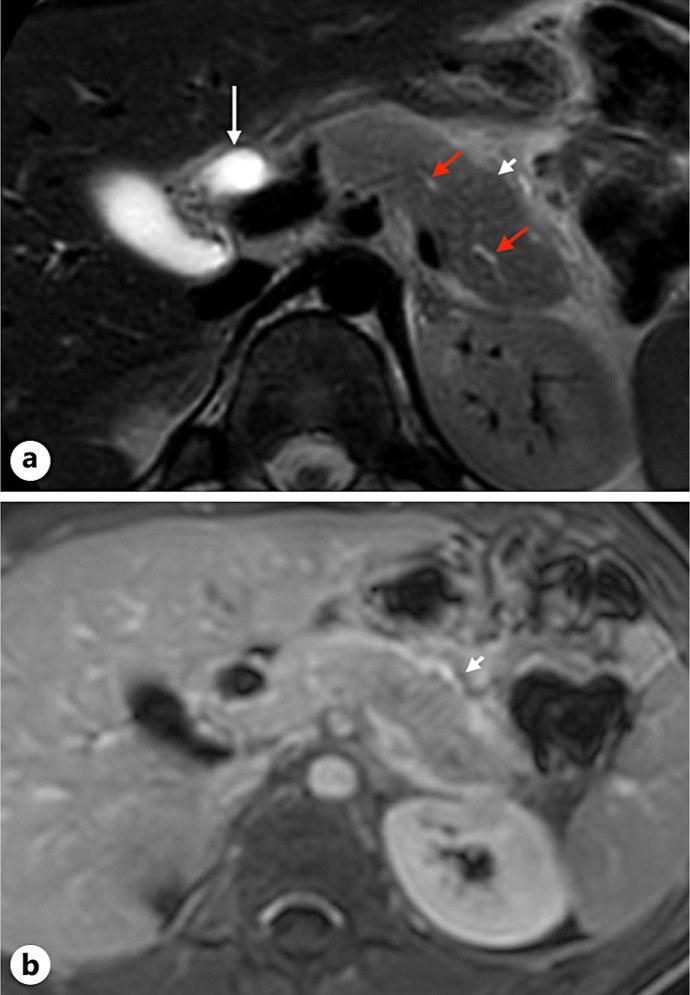
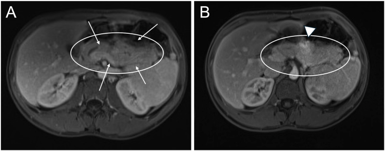

6145 — Viêm tụy tự miễn ở trẻ / Pediatric autoimmune pancreatitis (P-AIP)
Tags: pattern:tuy-to-lan-toa pattern:hep-ong-tuy pattern:ngam-thuoc-muon pattern:vo-bao-tuy pattern:teo-tuy vung:tuy vung:o-bung vung:ong-mat protocol:MRI-bung-co-tuong-phan protocol:MRCP protocol:sieu-am-bung protocol:EUS-FNB score:ICDC
Mức chắc chắn (certainty): tổng hợp y văn (literature synthesis) — 1 đoàn hệ 37 trẻ lớn nhất hiện có (United European Gastroenterol J 2025, PMC12188370, CC BY-NC-ND), 2 ca nguyên văn có ảnh (Case Rep Gastroenterol 2025, PMC12040306, CC BY-NC; Gastro Hep Adv 2026, PMC12681695, CC BY) và bảng tổng hợp 102 ca 2017–2024 trong cùng đoàn hệ Thụy Điển. Nhóm không có bệnh nhân của mình; chỗ bài gốc tự mâu thuẫn (số level 1/2 giữa bảng và văn bản) được ghi rõ là mâu thuẫn nguồn, không chọn bừa.
Câu chốt: P-AIP là bệnh hiếm nhưng không được bỏ sót vì hậu quả của nó là MỔ OAN. Ba số phải thuộc: (1) P-AIP là nguyên nhân hàng đầu của viêm tụy mạn ở trẻ, chiếm ~4%; (2) IgG4 chỉ tăng ở 15,2% (5/37) và amylase/lipase bình thường ở 46–57% lúc chẩn đoán — nên không thể dựa vào xét nghiệm để loại trừ; (3) glucocorticoid là điều trị đầu tay, 24,3% tự khỏi, 83,8% lui bệnh hoàn toàn và tái phát 17–25% — nghĩa là thử corticoid có kiểm soát tốt hơn cắt tụy để chẩn đoán. Trên ảnh, chốt là tụy to lan tỏa mất phân thùy + ngấm thuốc muộn dạng đốm + vỏ bao quanh, ống tụy hẹp dài nhưng KHÔNG giãn nhiều phía trên.
1. Tổng quan bệnh học – cơ chế hình ảnh
1.1 Bệnh học: hai thể, hai cơ chế — và vì sao trẻ KHÁC người lớn
- AIP type 1 = viêm tụy xơ hóa tăng lympho–tương bào (lymphoplasmacytic sclerosing pancreatitis), thuộc bệnh IgG4; gặp ở nam lớn tuổi (tuổi trung bình 61,4), vàng da tắc mật 63% so với 8,4% ở type 2 (PMC12681695 dẫn y văn).
- AIP type 2 = viêm tụy ống trung tâm tế bào trung tính (idiopathic duct-centric pancreatitis), không liên quan IgG4, liên quan bệnh ruột viêm (IBD) khoảng 48%; tuổi trung bình 33,5, khởi phát bằng viêm tụy cấp 34–64% so với 5% ở type 1 (PMC12681695).
- Ở trẻ, type 2 chiếm ưu thế: trong 37 trẻ Thụy Điển, type 2 = 56,8%, type 1 = 24,3%, NOS = 18,9% (PMC12188370). Vì vậy IgG4 thường âm và IBD là manh mối mạnh hơn nhiều so với IgG4.
- Về mô bệnh: thâm nhiễm lympho–tương bào quanh ống + xơ hóa hình sao (storiform) ở type 1; thâm nhiễm bạch cầu trung tính vào biểu mô ống ở type 2. Hệ quả hình ảnh: phù nề nhu mô + thâm nhiễm quanh ống → tụy to, mất phân thùy, ngấm thuốc chậm, và hẹp ống do viêm chứ không do xơ co kéo — nên hồi phục sau corticoid.
1.2 Vật lý: vì sao "ngấm thuốc muộn" và "vỏ bao" lại là dấu hiệu chốt
- Tụy bình thường ngấm thuốc sớm và mạnh ở thì động mạch (tụy là tạng có mật độ mao mạch rất cao). Trong AIP, phù nề + xơ hóa + thâm nhiễm tế bào làm khoảng kẽ tăng → thuốc cản quang khuếch tán chậm vào mô đệm: thì động mạch ngấm kém/không đều ("dotted/speckled"), rồi tăng dần ở thì tĩnh mạch cửa và muộn. Đây là lý do bắt buộc chụp nhiều thì, không kết luận trên một thì.
- "Vỏ bao quanh tụy" (peripancreatic pseudocapsule/rim): dải ngấm thuốc mỏng, đều, bao quanh tụy ở thì muộn — tương ứng viêm xơ quanh tụy, không phải vỏ bao thật (không có biểu mô). Đây là dấu rất đặc hiệu cho AIP so với ung thư (u hiếm khi tạo vòng ngấm đều quanh cả tuyến).
- Mất phân thùy ("featureless pancreas"): tiểu thùy tụy bình thường là các đơn vị 1–2 mm ngăn cách bởi mỡ; phù nề làm mất ranh giới tiểu thùy → tụy thành khối đồng nhất hình xúc xích. Trên T1 không cản quang, tụy bình thường sáng hơn gan (do protein nội tiết và mỡ); trong AIP tụy giảm tín hiệu T1 vì phù.
- Hẹp ống tụy: ICDC phân biệt level 1 = hẹp dài > 1/3 chiều dài ống chính hoặc nhiều chỗ hẹp, KHÔNG giãn ống phía trên đáng kể; level 2 = hẹp khu trú/đoạn, không giãn nhiều, ống < 5 mm (bảng trong PMC12188370). Điểm mấu chốt: ung thư gây giãn ống phía trên rõ, AIP thì không — vì viêm lan dọc ống chứ không tắc hoàn toàn.
1.3 Dịch tễ và biểu hiện lâm sàng — số của đoàn hệ lớn nhất
- Hiếm: y văn đến 2024 mới có < 100 ca P-AIP được báo cáo; gộp 4 nghiên cứu 2017–2024 được 102 ca, tuổi trung vị 12,8 (2–18), 55% nữ (PMC12188370).
- 37 trẻ Thụy Điển (2006–2022): tuổi trung bình 13,5 ± 2,8 (7–18), nam 54,1%; viêm tụy cấp 62,2% (tất cả thể nhẹ theo Atlanta), sụt cân 45,9%, đau bụng 43,2%, vàng da 21,6%, mệt 16,2%; viêm tụy cấp tái diễn 21,7% (5/23) (PMC12188370).
- Đa cơ quan 81,1%, trong đó IBD 62,2% (15 viêm loét đại tràng, 4 Crohn, 4 không xác định), viêm đường mật liên quan miễn dịch 18,9%, thận 8,1%, viêm giáp 5,4%, viêm mạch 2,7%.
- Suy tụy ngoại tiết 43,2% lúc chẩn đoán → 24,3% lúc theo dõi cuối (theo dõi 6,5 ± 4,9 năm); đái tháo đường 2,7% (1/37, chỉ sau cắt toàn tụy); nang giả 5,4%, vôi hóa tụy 0% — khác hẳn viêm tụy mạn người lớn.
1.4 Vì sao chẩn đoán khó: ba "âm tính giả" hay gặp
- IgG4 bình thường: chỉ 15,2% (5/37) tăng; chỉ 2 ca > 4 lần giới hạn trên. Ở trẻ, IgG4 không đủ để loại trừ (PMC12188370).
- Men tụy bình thường: 46–57% trẻ P-AIP có amylase/lipase bình thường lúc chẩn đoán (INSPPIRE, dẫn trong PMC12188370).
- Không vôi hóa: 0/37 có vôi hóa tụy — nếu chờ vôi hóa để chẩn đoán "viêm tụy mạn" thì sẽ bỏ sót toàn bộ.
2. Mẫu hình + chẩn đoán phân biệt theo vị trí (gamut)
2.1 Gamut theo hình thái tụy trên MRI/MRCP
- To lan tỏa "xúc xích" + mất phân thùy + vỏ bao: AIP type 1/2, phù tụy do viêm cấp nặng, lymphoma tụy (hiếm ở trẻ), phù do tắc tĩnh mạch lách.
- To khu trú/dạng khối ở đầu tụy: AIP thể khối (mass-forming), u đặc–nhầy nhú (SPN), u nguyên bào tụy, lymphoma, nang ống mật chủ chèn ép.
- Ống tụy hẹp dài/nhiều chỗ, không giãn nhiều: AIP (level 1 ICDC), viêm tụy mạn di truyền (thường có sỏi/giãn), IPMN (giãn nang).
- Teo tụy sau điều trị: AIP đã đáp ứng corticoid (dấu hiệu tốt, không phải tiến triển).
2.2 Gamut theo bối cảnh lâm sàng
- Trẻ + IBD (đặc biệt viêm loét đại tràng) + viêm tụy tái diễn: AIP type 2 là hàng đầu.
- Trẻ + vàng da tắc mật + tăng IgG4 + tổn thương cơ quan khác (thận, tuyến giáp, đường mật): AIP type 1/IgG4-RD.
- Trẻ + đau bụng cấp + không IBD + hồi phục nhanh không cần điều trị: viêm tụy cấp đơn thuần hoặc AIP tự khỏi (24,3%).
- Trẻ + khối đầu tụy + không đáp ứng corticoid: nghĩ u — đây là nhóm bị mổ oan (17% trong loạt Scheers cũ; 2,7% trong đoàn hệ Thụy Điển).
3. Bảng so sánh phân biệt (ma trận đối chiếu)
| Thực thể (entity) | Hình ảnh điển hình | Chốt vào (rule-in) | Chốt loại (rule-out) | Gợi ý xác nhận |
|---|---|---|---|---|
| P-AIP type 2 (IBD-associated) | Tụy to lan tỏa, mất phân thùy, ngấm thuốc muộn dạng đốm, vỏ bao quanh; ống hẹp dài không giãn; không vôi hóa | IBD + viêm tụy tái diễn + hình ảnh trên + đáp ứng corticoid ≤ 2 tuần | Khối khu trú ngấm mạnh + giãn ống rõ → nghĩ u | MRI/MRCP + nội soi tiêu hóa; IgG4 không cần dương |
| P-AIP type 1 (IgG4-RD) | Như trên ± tổn thương thận/tuyến giáp/đường mật; có thể dày thành ống mật | IgG4 > 2× ULN (người lớn) hoặc > 4× ULN (gợi ý mạnh) + đa cơ quan + hình ảnh điển hình | IgG4 bình thường KHÔNG loại trừ (chỉ 15,2% trẻ tăng) | IgG4 huyết thanh, sinh thiết nếu cần, PET/CT tìm ổ ngoài tụy |
| Viêm tụy cấp/viêm tụy tái diễn đơn thuần | Tụy to nhẹ, phù quanh tụy, không vỏ bao đều; hết sau vài ngày | Khởi phát cấp + hồi phục nhanh + không tái diễn + không IBD | To lan tỏa kéo dài + vỏ bao + hẹp ống dài → AIP | Theo dõi MRI 4–6 tuần; đừng vội corticoid |
| U tụy (SPN, nguyên bào tụy, lymphoma) | Khối khu trú, có thể đặc–nang, xuất huyết, vôi hóa; giãn ống phía trên | Khối + giãn ống + không đáp ứng corticoid + có thành phần đặc/nang | To lan tỏa đối xứng + vỏ bao + đáp ứng corticoid → AIP | MRI + EUS-FNB; tránh cắt tụy chẩn đoán (bài 6120) |
| Nang ống mật chủ (choledochal cyst) | Giãn ống mật chủ hình nang, có thể kèm sỏi; tụy bình thường | Giãn khu trú ống mật + MRCP thấy nang | Hẹp ống tụy dài + tụy to lan tỏa → AIP | MRCP; bài 6137 |
| Viêm tụy do thuốc | Tụy to, phù; không vỏ bao, không hẹp ống dài | Thuốc khởi phát trong 2–4 tuần, ngừng thuốc thì hết | Tái diễn nhiều đợt + IBD + vỏ bao → AIP | Bảng thuốc, thử ngừng thuốc; bài 6136 |
| Viêm tụy mạn di truyền (PRSS1/SPINK1/CTRC) | Sỏi tụy, giãn ống, teo nhu mô, vôi hóa theo thời gian | Sỏi/giãn ống + đột biến gen + không đáp ứng corticoid | Không sỏi, không giãn, có vỏ bao → AIP | Gen tụy; trong 37 trẻ có 6 ca mang biến thể (CTRC ×4, PRSS1 ×1, SPINK1 ×1) |
3.1 Ba dấu hiệu "chốt" trên MRI — đọc theo thứ tự
- Hình dạng: to lan tỏa (không phải một khối) + mất phân thùy.
- Động học ngấm thuốc: kém/đốm ở thì động mạch → tăng dần thì muộn, kèm vỏ bao mỏng đều.
- Ống tụy: hẹp dài/nhiều chỗ nhưng ống phía trên không giãn nhiều (level 1 ICDC) — ngược với u.
4. Protocol chụp + hệ phân độ/theo dõi
4.1 Protocol
- Siêu âm bụng là bước đầu: đo đường kính ống mật chủ (ca 14 tuổi: 9 mm), tìm đầu tụy giảm âm to; siêu âm không loại trừ AIP.
- MRI bụng có cản quang từ (gadolinium) là chuẩn: T1 không cản quang, T2, DWI, và các thì động mạch–tĩnh mạch cửa–muộn (bắt buộc nhiều thì để thấy ngấm muộn); MRCP đánh giá ống tụy–mật. Trong đoàn hệ Thụy Điển, MRI 100%, CT 37,8%, siêu âm 100%, EUS 29,7%, ERCP 16,2% (PMC12188370).
- EUS-FNB khi không chắc AIP vs u; ERCP chỉ để điều trị (đặt stent khi vàng da tắc mật), không dùng ERCP để chẩn đoán nếu đã nghĩ AIP.
- Thử corticoid có kiểm soát (prednisolone) khi hình ảnh điển hình và đã loại u: đáp ứng lâm sàng–hình ảnh trong ≤ 2 tuần là tiêu chuẩn chẩn đoán (bảng ICDC trong PMC12040306).
4.2 Phân độ và theo dõi
flowchart TD
A[Trẻ viêm tụy tái diễn hoặc vàng da tắc mật] --> B[Siêu âm bụng]
B --> C[MRI + MRCP nhiều thì]
C --> D{Tụy to lan tỏa + ngấm muộn + vỏ bao?}
D -->|Có| E{Giãn ống tụy rõ hoặc khối khu trú?}
E -->|Không| F[Nghĩ P-AIP - thử prednisolone 2 tuần]
E -->|Có| G[Nghi u - EUS-FNB, không cắt tụy mù]
F --> H{Đáp ứng trong 2 tuần?}
H -->|Có| I[Tiếp tục corticoid, giảm liều, theo dõi IBD]
H -->|Không| G
I --> J{Tái phát?}
J -->|Có| K[Lặp corticoid hoặc thêm AZA/6-MP/MMF; infliximab nếu có IBD]
J -->|Không| L[Theo dõi teo tụy, suy tụy ngoại tiết, đái tháo đường]
- Đáp ứng: lui bệnh hoàn toàn 83,8%; tự khỏi 24,3%; tái phát 17–25% (INSPPIRE/systematic review, dẫn trong PMC12188370); đoàn hệ Thụy Điển không có tái phát tại tụy nhưng đa số được điều trị IBD bằng AZA/biologic, nên không được coi là tỉ lệ tái phát thật.
- Theo dõi dài hạn: suy tụy ngoại tiết (FE-1), đái tháo đường (hiếm ở trẻ), teo tụy trên MRI (dấu hiệu đáp ứng, không phải xấu đi), và kiểm soát IBD — điều trị IBD có thể cải thiện cả hai bệnh.
5. Biến thể bình thường và cạm bẫy
- "Tụy to" thoáng qua sau viêm tụy cấp — không phải AIP; chụp lại sau 4–6 tuần trước khi gắn nhãn tự miễn.
- IgG4 âm không loại trừ: chỉ 15,2% trẻ tăng; đừng chờ IgG4 để điều trị.
- Men tụy bình thường không loại trừ: 46–57% bình thường lúc chẩn đoán.
- Không vôi hóa không loại trừ viêm tụy mạn: 0/37 có vôi hóa — tiêu chuẩn người lớn không áp dụng nguyên.
- AIP thể khối dễ bị cắt tụy: trong loạt cũ 17% bệnh nhi P-AIP đã bị mổ; ngay cả đoàn hệ hiện đại vẫn có 2,7% cắt toàn tụy vì nghi u. Không cắt tụy để chẩn đoán khi hình ảnh còn phù hợp AIP.
- Corticoid che lymphoma: nếu đáp ứng một phần rồi tái phát nhanh, phải sinh thiết lại thay vì tăng liều mù.
- Vỏ bao quanh tụy có thể gặp ở viêm tụy cấp nặng — chỉ có giá trị khi kèm to lan tỏa + hẹp ống dài + bối cảnh IBD.
- Teo tụy sau corticoid bị đọc nhầm là "tiến triển" — thực ra là dấu hiệu lành.
6. Tự lượng giá — Blind Quiz
Ca 1 — Nam 18 tuổi, viêm loét đại tràng 6 tháng, đau thượng vị 3 ngày, sụt 4,5 kg, lipase 5.573 U/L.

- Hỏi: (1) Mô tả ống tụy trước điều trị; (2) chẩn đoán phân biệt chính; (3) dấu hiệu nào trên ảnh sau điều trị xác nhận chẩn đoán?
Bấm để hiện đáp án
- Dấu hiệu: (A) nhiều chỗ hẹp dọc ống tụy (đầu mũi tên) + ống chính giãn với cắt cụt đột ngột ở đầu tụy; (B) sau prednisolone 10 mg/ngày, ống tụy trở lại bình thường ở đuôi (mũi tên).
- Chẩn đoán: AIP type 1 ở trẻ có IBD — IgG4 2.430 mg/dL rồi 153,2 mg/dL (tham chiếu 4–86), tụy hình xúc xích.
- Chốt: hẹp ống hồi phục sau corticoid — ung thư không làm ống tụy "mở lại" như vậy.
- Nguồn ảnh: Rose JH và cs., Gastro Hep Adv 2026;5(2):100834, PMC12681695 Fig. 1 — CC BY 4.0, ảnh nguyên bản.
Ca 2 — Nữ 14 tuổi, đau bụng – nôn – vàng da; siêu âm thấy ống mật chủ 9 mm và đầu tụy giảm âm.

- Hỏi: Hai dấu hiệu siêu âm gợi ý gì? Bước tiếp theo?
Bấm để hiện đáp án
- Dấu hiệu: (a) giãn ống mật chủ 9 mm (giữa caliper) có tín hiệu Doppler; (b) đầu tụy giảm âm, to (mũi tên) — giả u.
- Chẩn đoán: nghi AIP; bước tiếp theo là MRI + MRCP nhiều thì, không chọc sinh thiết ngay.
- Nguồn ảnh: Hendlisz B và cs., Case Rep Gastroenterol 2025;19(1):303–312, PMC12040306 Fig. 1 — CC BY-NC 4.0, ảnh nguyên bản.
Ca 3 — Cùng bệnh nhi, MRI tụy trước điều trị.

- Hỏi: Ba dấu hiệu nào trên MRI chốt AIP? Vì sao phải chụp thì muộn?
Bấm để hiện đáp án
- Dấu hiệu: (a) T2: giãn ống mật chủ (mũi tên), tụy to lan tỏa không do u (đầu mũi tên), ống tụy không đều (mũi tên đỏ); (b) T1 sau tiêm: ngấm thuốc viền quanh tụy (đầu mũi tên) — "vỏ bao giả".
- Vì sao thì muộn: thuốc khuếch tán chậm vào mô đệm viêm; thì động mạch chỉ thấy ngấm kém/đốm, dễ đọc nhầm là "khối giảm ngấm".
- Nguồn ảnh: Hendlisz B và cs., Case Rep Gastroenterol 2025, PMC12040306 Fig. 2 — CC BY-NC 4.0.
Ca 4 — Bệnh nhi P-AIP sau một đợt điều trị corticoid: MRI cho thấy tụy nhỏ lại, mất dải quanh tụy.

- Hỏi: Teo tụy là dấu hiệu tốt hay xấu? Cần theo dõi gì?
Bấm để hiện đáp án
- Dấu hiệu: (A) trước: tụy to lan tỏa "xúc xích" (mũi tên) trong vòng khoanh; (B) sau: teo tuyến, mất dải giảm tín hiệu quanh tụy, còn một khối viêm khu trú (đầu mũi tên).
- Ý nghĩa: teo tụy sau corticoid là dấu hiệu ĐÁP ỨNG, không phải tiến triển; nhưng phải theo dõi suy tụy ngoại tiết (FE-1) và đái tháo đường.
- Nguồn ảnh: Rose JH và cs., Gastro Hep Adv 2026, PMC12681695 Fig. 2 — CC BY 4.0.
Bài liên quan chéo
- 6120 – U tụy ở trẻ: SPN, u nguyên bào tụy, IPMN nhánh — hàng phân biệt bắt buộc, lý do "mổ oan".
- 6135 – Viêm tụy cấp ở trẻ — nền tảng Atlanta và nguyên nhân.
- 6136 – Viêm tụy do thuốc ở trẻ — chẩn đoán loại trừ.
- 6137 – Nang ống mật chủ ở trẻ — giãn ống mật, DDx của vàng da tắc mật.
- 135 – Viêm tụy cấp (Atlanta)
- 136 – U nang tụy
- 600 – Tổng quan Nhi khoa
Không dùng để chẩn đoán độc lập khi chưa có người hướng dẫn.